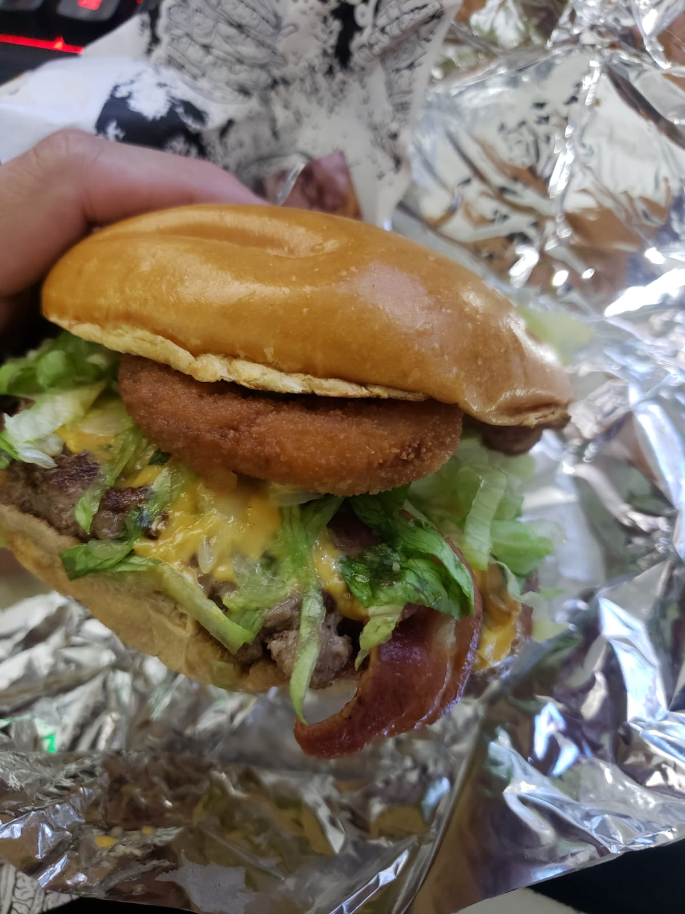

O Sabor do Descanso no Fim do Dia!

Nada melhor que depois de um longo dia de trabalho, poder morder um hambúrguer suculento...
O pão macio, o queijo derretendo e o cheiro irresistível fazem o cansaço ir embora.
Cada mordida é um pequeno momento de descanso e recompensa.
Simples, mas perfeito para fechar o dia.